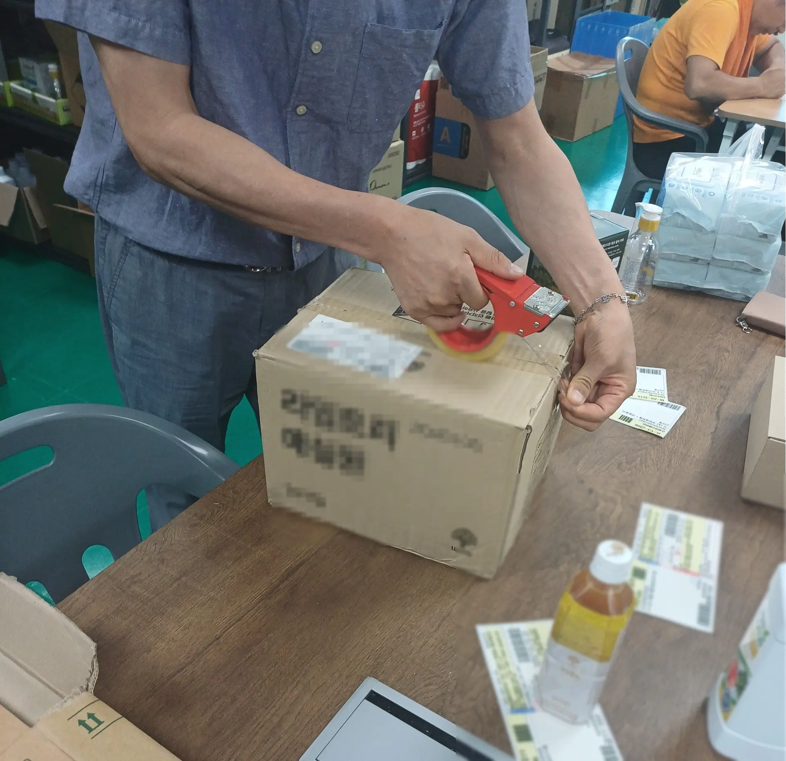
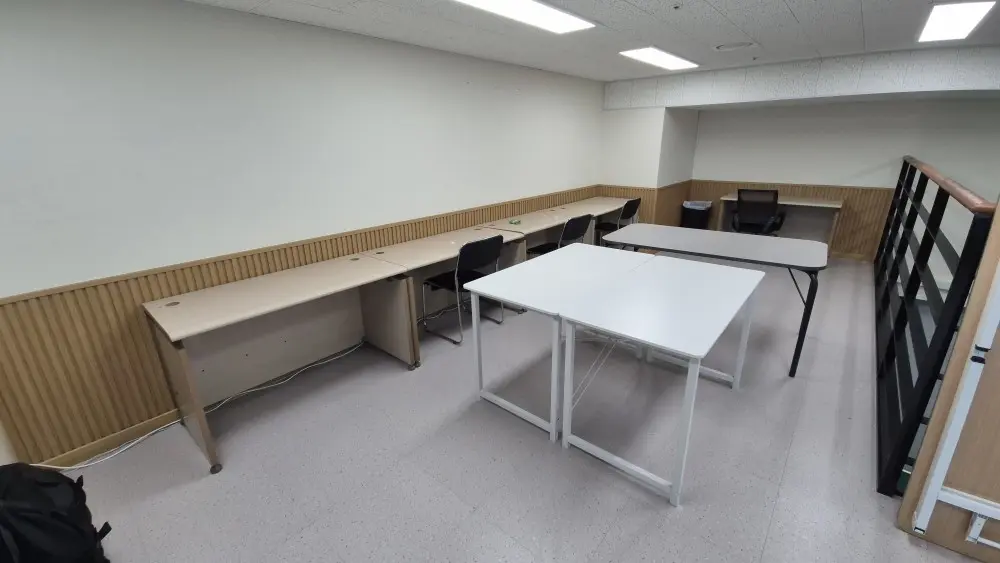

OUR WORKPLACE · 우리의 일터
각자의 강점을 살려
함께 완성하는 일터
태장은 근로자의 강점과 작업 특성에 맞춰 민화·문화 굿즈, 포장·검수, 환경정비 등 다양한 직무를 운영합니다.



HOW WE WORK
태장은 이렇게
일합니다
준비 안내 수행 확인
- 01
작업을 나눕니다
복잡한 업무를 작은 단계로 정리합니다.
- 02
순서를 쉽게 안내합니다
작업 순서와 안전수칙을 이해하기 쉽게 안내합니다.
- 03
함께 확인합니다
담당자가 진행 과정과 결과를 함께 확인합니다.